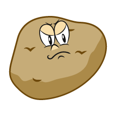

Seven-Spice Potatoes

Description
Pleasantly piquant potatoes, pan-fried in a mixture of seven spices
Ingredients
- Yukon Gold potatoes, eighthed
- Mustard seed
- Cumin
- Paprika
- Garlic, minced
- Chili powder
- Black Pepper
- Anise
- Turmeric
- Salt
- Neutral oil
Steps
- Preheat the oil in your pan on medium-high heat
- Add in the spices and toast for 30 seconds
- Add in the potatoes and fry until golden, stirring every minute or two
Index